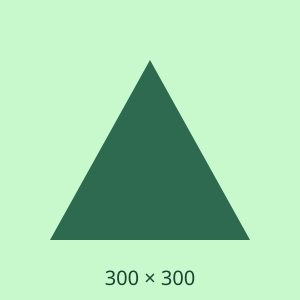

ספר: יסודות התכנות

מחיר: 89₪
<article> — מוצר עומד בפני עצמו
| # | התוכן | התגית | הנימוק |
|---|---|---|---|
| 1 | פוסט בודד בבלוג | article | עומד בפני עצמו לגמרי. אפשר לשלוח אותו בניוזלטר או ב-RSS והוא עדיין מובן. |
| 2 | אזור "אודותינו" בדף הבית | section | קטע נושאי עם כותרת ברורה, אבל הוא חלק מדף הבית ולא יחידה עצמאית. |
| 3 | עטיפה למרכוז ב-CSS | div | אין לה שום משמעות תוכנית. זה בדיוק מה ש-div נועד לו. |
| 4 | תגובה של משתמש | article | תגובה היא יחידת תוכן עצמאית עם מחבר ותאריך משלה. מקננים אותה בתוך ה-article של הפוסט. |
| 5 | פרק 3 במדריך ארוך | section | יש לו כותרת, אבל הוא חסר משמעות בלי הפרקים שלפניו. |
| 6 | כרטיס מוצר בחנות | article | מוצר עומד בפני עצמו: שם, תמונה, מחיר. אפשר להציג אותו בכל הקשר. |
| 7 | אזור "שאלות נפוצות" | section | קטע נושאי בעל כותרת בתוך הדף. |
| 8 | שורה עם 3 עמודות לפריסה | div | מבנה ויזואלי בלבד. אם התוכן שבתוך העמודות סמנטי – זה מספיק. |
אנחנו חנות ספרים עצמאית שפועלת מאז 2011.
<section> — קטע נושאי בדף הבית

מחיר: 89₪
<article> — מוצר עומד בפני עצמו
מחיר: 112₪
<div class="row"> — פריסה ויזואלית בלבד
מאת יעל כהן ·
בכל חודש אנחנו קוראים כ-40 ספרים ובוחרים שלושה.
מתחילים מרשימת המועמדים של המו"לים.
<section> — פרק בתוך המאמר
שלושה קוראים עוברים על כל ספר שנותר.
תודה על השקיפות! מעניין לראות את התהליך.
<article> — תגובה עצמאית בתוך article
אשמח לדעת מי הקוראים.
כן, לכל הארץ, חינם בקנייה מעל 200₪.
בהחלט. זמן ההזמנה הוא כשבועיים.
<section> — קטע נושאי בעל כותרת
להשתמש ב-section כמו ב-div, בלי כותרת:
<section class="wrapper">
<section class="row">
<section class="col">...</section>
</section>
</section>
זו פשוט "Div Soup" בשם אחר, והיא גרועה יותר מ-div: היא יוצרת אזורים ריקים בעץ הנגישות ומבלבלת קוראי מסך.
הכלל: אם לא כתבתם <h2> או
<h3> מיד בתוך ה-section – כנראה שזה צריך להיות div.